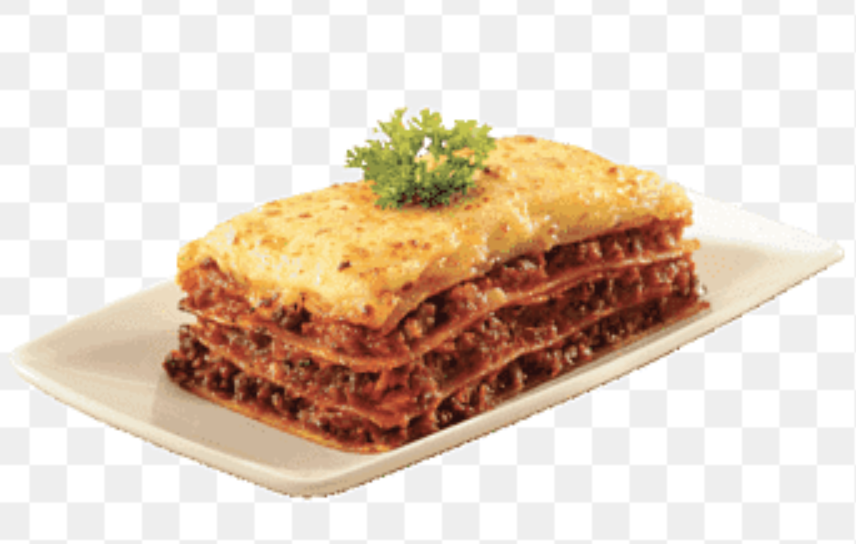

Lasagna

How to make mouth watering lasagna
Ingredients
- Turkey meat
- Cheese
- Tomato sauce
- Lasagna sheets
Steps
- Cook the turkey meat
- Place lasagna sheet into pan
- Put turkey and tomato sauce on
- Layer each layer with cheese
- Bake in oven at 425 deg for 60 min